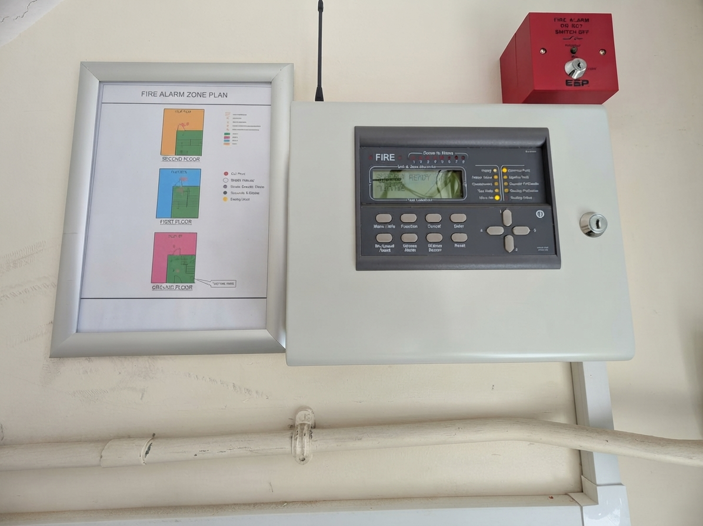

What good fire alarm documentation looks like
A compliant fire alarm system isn't just the equipment. It's the paperwork that goes with it. When a system is inspected as part of a fire risk assessment, this is what's checked.

Certificates
BS 5839-1 sets out certificates for each stage: design, installation, commissioning, and acceptance. A servicing certificate should be issued after every maintenance visit, and a modification or extension certificate whenever the system changes. Each certificate should state who did the work, what it covers, and any variations from the standard.
The logbook
Kept on site, the logbook should record:
- The names of those managing fire safety
- Contact details for the installer, maintainer, and any monitoring service
- Every test, fire signal, and false alarm, with date, time, and zone
- All faults and remedial work
- Any agreed variations from BS 5839-1, cross-referenced to the relevant clause
A zone plan
A diagram showing the building's zones, displayed at or near the control panel, so anyone responding to an alarm can locate the fire. Responsibility for producing the zone plan is often left undefined between designer, installer, and commissioning engineer — a common reason it's missing at handover. It should be assigned to a specific party at the planning stage.
Unacceptable variation
A missing zone plan is treated as an unacceptable variation. This applies to premises in which there is more than a single zone on any storey, and where people sleep.
Servicing evidence
Weekly call point testing by the Responsible Person, plus a full inspection and test at least every six months by a competent person, in line with BS 5839-1.
Why it matters
A fire safety enforcement officer can request this evidence at any time. A system that appears to work but has no paperwork, missing variations, or an out-of-date logbook may not be considered suitable and sufficient under the Regulatory Reform (Fire Safety) Order 2005.
This article is for general information only and doesn't constitute a fire risk assessment. Every system and building is different — the specifics of yours will be confirmed on inspection.
Want your fire alarm documentation checked?
Get in touch